Specifications
- Path
- Descriptions > 55 ELECTRICAL EQUIPMENT > 5560 ON-BOARD INSTRUMENTS > 5560B ANALOGUE INSTRUMENT PANEL > Specifications
- Kind
- system description
- Applies to
- all engines; all production periods
- Interactive page
- https://sloeber94.github.io/elrnDB-lThss/en/#/209572
Applies to: all engines; all production periods
INTRODUCTION
The instrument panel is inside the B-CAN and is called the NQS (Instrument Panel Node).
The task of the NQS is to display the vehicle operating parameters and to notify the driver of any possible faults in the on-board electronic systems.
The signals coming from the systems/nodes in the C-CAN are made available to the NQS by the Body Computer Node by means of an interface, known as a Gateway, which has the function of allowing the exchange of information between the two CANs with different operating specifications.
The panel comes in one version only which differs according to the engine type and features the following:
- a negative transreflexive anti-glare type LCD (i.e. during the day it exploits the natural daylight and at night the backlighting maximizes the contrast between the light figures on a dark background) which has the function of a milometer and, on versions with an ACC device or automatic transmission, which has the function of displaying the recommended gear or the gear engaged, respectively.
- an active matrix reconfigurable colour display.
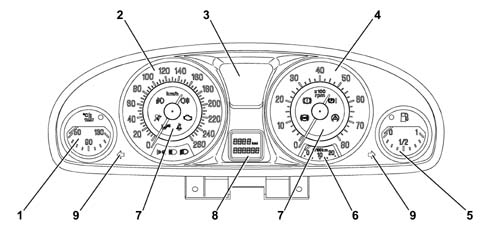
- 1 - Coolant temperature gauge
- 2 - Speed indicator
- 3 - Active matrix reconfigurable display (for repetition of CONNECT information)
- 4 - Rpm indicator
- 5 - Fuel level gauge
- 6 - Fuel consumption gauge
- 7 - Operating warning lights
- 8 - LCD (milometer/automatic transmission gear)
- 9 - Direction indicator warning lights
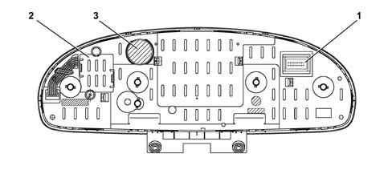
- 1 - 18 pin connector
- 2 - Inverter
- 3 - Speaker
The panel lighting takes advantage of electro-luminescence, in other words the capacity of some materials to light up if an electric current passes through them. The brightness is adjusted by a dimmer that has nine positions and is located to the left of the instrument panel in the lighting control panel.
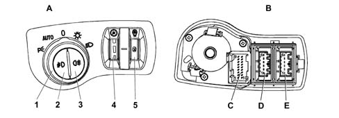
- A - Front view
- B - Rear view
- C - Wiring diagram
- 1 - Direction indicator
- 2 - Side light and brake light
- 3 - Connector
PIN OUT
The diagram below illustrates the PIN OUT for the connector at the back of the instrument panel.
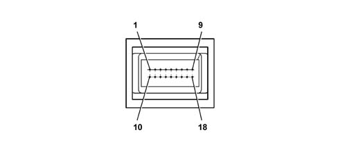
- 1 - INT. +15 from fuse F37
- 2 - +30 from fuse F53
- 3 - B-CAN A
- 4 - B-CAN B
- 5 - Negative signal from kilometer zeroing button in PCS (Left Panel)
- 6 - Rear Air Bag failure intelligent warning light negative signal
- 7 - Earth
- 8 - SCS failure warning light negative signal
- 9 - EPB failure warning light positive signal
- 10 - I.E./EOBD failure warning light negative signal from N.C.M.
- 11 - Lighting dimmer analogue signal at CLE
- 12 - Headlamp alignment (CAF) failure warning light negative signal
- 13 - C.A.B. (AIR BAG) failure intelligent warning light negative signal
- 14 - Passenger Air Bag disabled intelligent warning light negative signal
- 15 - Driver’s seat belt not fastened warning light negative signal
- 16 - Power assisted steering (CSG) failure warning light negative signal
- 17 - Engine oil level sensor supply
- 18 - Signal from engine oil level sensor
INDICATORS AND WARNING LIGHTS BEHAVIOUR
The specifications and functional parameters of the most important indicators and warning lights in the Instrument Panel are illustrated below.
The corresponding function code [XXX] and the code for the node involved with this function [YYY] are given for some of the functions to refer to for further details.
Reference times table
The table below groups together the codes, durations and descriptions of the typical system intervention times.
These figures constitute a parameter for defining the correct operation of the vehicle systems.
Time | Typical value | Description |
|---|---|---|
Tcks | 4 s | Duration of warning lights check stage from key-on |
Tckd | 5 s | Check display time from key-on |
Trec | 2,5 s | Time-out for signals received for node recovery |
Tdis | 100 ms | Maximum delay for warning lights coming on (check at key-on) for discrete logic |
Tnfr | 600 ms | Time-out for signals received for brake node recovery (NFR) |
Tab | 15 s | Air Bag failure display delay |
Tabw | 50 s | Air Bag failure warning display delay |
Fuel level reading [F002]
Status | Description of Performance | Node recovery |
|---|---|---|
Key on: | - The pointer indicates the actual value of the fuel valve, according to the logic of the function [F002.NBC.C1]. | - The pointer should be positioned at the start of the scale (rest zone - key-off) and there should be a fault message on the matrix display. |
Running: | - The pointer indicates the fuel level corresponding to the actual volume of fuel in the tank, guaranteeing that there are no fluctuations/errors due to splashing, according to the component function logic [F002.NBC.C1]. | - The pointer should be positioned at the start of the scale (rest zone - key-off) and there should be a fault message on the matrix display. |
- If there is a fault, the pointer should be positioned at the start of the scale (rest zone - key-off) and there should be a fault message on the matrix display.#C | - If there is no supply at the NQS node the pointer will remain in the position prior to the fault.#C | |
Key off: | - The pointer is located in the rest zone | - |
The fuel level gauge makes it possible to display fuel figures as a percentage.
The instrument panel receives information, via the B-CAN line, about the fuel level of the tank capacity expressed in % points calculated by the NBC and this information is then represented by a pointer moved by a stepping motor.
Fuel level strategy
The Lancia Thesis adopts a strategy designed to ensure that the fuel level reading on the instrument panel is strictly correlated to the mass of fuel actually present in the tank and not affected by:
- fuel slopping (during vehicle operation)
- any vehicle manoeuvre or position during normal service/parking (errors due to parking on slopes, steps etc.)
It also ensures that refuelling/fuel loss will be correctly identified.
The body computer implements this strategy (see table ) by comparing:
- a signal representing the last fuel level reading on the instrument panel, stored immediately before the vehicle engine was last turned off (signal A)
- a fuel level signal from the tank sensor a few seconds after the vehicle was last turned off (signal B)
- a signal from the tank at the time the vehicle is turned on (signal C)
Omissions or incorrect download of the 3 signals by the body computer may lead to an incorrect reading on the instrument panel until the next time the car is refuelled (i.e. when at least 10 l of fuel are added to the tank).
This situation may occur, for example, when repairs are carried out on the body computer without respecting the rule of disconnecting the battery at the beginning of the operation and reconnecting it when the work on electrical/electronic components is complete.
It is therefore important to observe this procedure scrupulously.
In any case, if the customer complains that the fuel level gauge is malfunctioning, before doing anything else, disconnect the battery and then reconnect after 10 seconds with the body computer properly connected, as described in the operating procedures.
The reading ordered on the instrument panel by the body computer upon vehicle ignition will conform to the value of these signals as indicated in the following table.
Situation upon vehicle start-up | Vehicle position estimated by the body computer | Fuel level reading on instrument panel |
|---|---|---|
A=B ; B=C | When level | Signal A (value before engine was last turned off is maintained) |
A=B ; B#C | When level, and: - refuelling if C > B - fuel lost if C < B | Signal C (updated with value recorded upon start-up) |
A#B ; B=C | On gradient | Signal A (value before engine was last turned off is maintained) |
A#B ; B#C | On gradient, and: - refuelling if C > B - fuel lost if C < B | Signal A + (signal C - signal B) |
Engine coolant temperature reading [F016]
Status | Description of Performance | Node recovery |
|---|---|---|
Key on: | - The pointer should indicate the temperature value, according to the strategy indicated in the component function chart [F016.NQS.C1]. | The pointer should be positioned at the start of the scale (rest zone - key-off) |
Running: | - The pointer should indicate the temperature value, according to the strategy indicated in the component function chart [F016.NQS.C1]. | - The pointer should be positioned at the start of the scale (rest zone - key-off) and there should be a fault message on the matrix display. |
- If there is a fault, the pointer should be positioned at the start of the scale (rest zone - key-off) and there should be a fault message on the matrix display.#C | - If there is no supply at the NQS node the pointer will remain in the position prior to the fault #C | |
Key off: | - The pointer should be in the rest zone | |
The temperature reading allows values between +50 ÷ +130 to be displayed
The panel receives engine temperature information, via the B-CAN line, made available by the NCM, which varies between an actual temperature range of -40 ÷ +215 °C (the range displayed is from +50 ÷ +130) and the NQS displays the temperature by means of an indicator moved by a stepping motor.
Gauge/warning light behaviour at the key-on
Ton = Temperature reading at key-on.
Toff = Temperature reading corresponding to the gauge position at the key-off (which usually corresponds to the actual temperature reading at the key-off). If what is defined in condition "d" takes place (burst of heat: 2 mins inhibition) the temperature reading corresponding to the position of the gauge is different from the actual temperature of the engine coolant.
Summary Table
Situation at the key-on | Reading on panel | Overheating warning light |
|---|---|---|
a) Ton = Toff | Ton | reading for actual state (= previous) |
b) Ton < Toff | Ton | Reading for current state |
c) Ton > Toff ( < 120 ± 1 °C) | Toff | Maintenance of previous stage (warning light off) |
d) Ton > Toff (heatwave) | Toff | Se Ton ³120 ± 1 °C e Toff < 120 ± 1 °C : |
the warning light is enabled on ignition after t = 2 mins #C | ||
Se Ton > Toff > 120 ± 1°C: | ||
Maintenance of previous state (warning light on) #C | ||
If conditions "a" and "b" occur at the key-on, the pointer should be in the position corresponding to the temperature value detected at the key-on (Ton) according to the strategy illustrated in the graph below
More specifically:
- if T £ 50 °C the pointer should be on the first scale notch/graduation.
- if T > 50 °C, the pointer should be positioned on the reference corresponding the temperature value measured.
If conditions "c" and "d" (burst of heat) occur at the key-on, then the temperature reading corresonding to the position of the pointer at the key-off should be shown; later on, the pointer will reach the position corresponding to the actual temperature in an (effective) time of 2 mins.
In addition, if the temperature at the key-on is Ton ³ 120 ± 1°C (e Toff < 120 ± 1°C), the temperature reading corresponding to the pointer measured at the key-off is shown and, later on, the pointer will reach the beginning of the red sector in a time of 2 mins. (the overheating warning light should not come on during this period); later on, if the engine management control unit sends/continues to send the warning light on signal, the instrument panel will place the pointer in the end of scale position (t = 1s) and light up the engine coolant overheating warning light and activate a beep 1 type alarm.
If the temperature varies during the above mentioned two minute period, the new objective will be updated to the current value (after the key-on). If the engine coolant overheating warning light on signal was present at the previous key-off (Toff > 120 ±1°C) and these conditions still exist at the next key-on, the pointer will be in the end of scale position and the engine coolant overheating warning light will come on. This persists as long as the warning light remains on.
Operating logic for the engine coolant temperature gauge at the key-on.
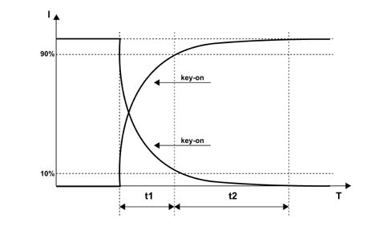
- I = Gauge position
- T = Time (s)
- t1 = 1.5 s + 0.5 / -0
- t2 = 3s
- t1+t2 = 5s max.
Temperature warning light and indicator operating logic
Operating logic for engine coolant temperature gauge in normal operating conditions
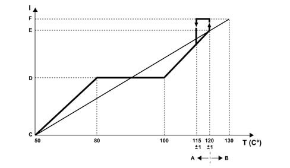
- I = Scale reading
- T = Temperature
- A - Gauge operation by instrument panel
- B - Warning light operation by c.c.m.
- C - Start of scale
- D - Centre of scale
- E - Start of red sector
- F - End of scale
For temperatures of T £ 50 °C, the pointer should be at the first reference on the scale (start of scale).
For temperatures between 50 ÷ 80 °C the pointer should increase in a linear fashion.
For temperatures between 80 ÷ 100 °C (normal operation), the pointer should remain in a stable position in the centre of the scale.
For temperatures between 100 ÷ 120 °C (uphill) and between 115 ÷ 100 °C (downhill) the pointer should move in a linear fashion.
For temperatures of T = 120 ± 1 °C, the pointer should be located at the beginning of the red sector of the scale.
For temperatures of T ³ 122 °C the pointer should reach the position corresponding to the beginning of the red sector and, as soon as the engine management control unit sends the warning light on signal, it should be positioned at the end of the scale (t = 1 s); the engine coolant temperature overheating warning light should come on at the same time.
In addition:
- if the warning light on signal coming from the c.c.m. remains in the ON state, the pointer should remain at the end of the scale and the warning light should remain on;
- if the c.c.m sends the warning light off signal (when the temperature goes below the level usually equal to T = 115 ± 1°C), the instrument panel should instantly switch the coolant overheating warning light off and the pointer should place itself (t = 1 s) in the position corresponding to the (actual) temperature value measured.
There is a hysteresis of 5 °C, in other words, for example, the warning light is switched on at 120°C, it is switched off at 115 °C.
Engine coolant overheating warning light
The panel receives the information that the warning light is switched on/off via the B-CAN line.
The software strategy that regulates the switching on/off of the engine coolant overheating warning light and the operation of the pointer in the end of scale position when the temperature levels/limits are reached, both in normal operation and if there is a burst of heat, is contained inside the engine management control unit.
Error conditions/diagnosis
The instrument panel warning light is activated at each key-on (check stage); after 4 secs. the CCM/NCM sends the panel the command to switch the warning light off. During this check stage the behaviour of the gauge should be as defined in the previous paragraph ("gauge behaviour at key-on"). Through the effect of the warning light coming on, the pointer is not in the end of scale position during the check stage.
If the warning light on conditions were present at the key-on (engine coolant temperature overheating and warning light already on at the previous key-off), the c.c.m. keeps the command to switch the warning light on activated and the instrument panel continues to keep the warning light in an ON state and places the pointer in the end of scale position.
DIAGNOSIS OF CONNECTING LINE WITH TEMPERATURE SENSOR
The system checks for the presence of irregular system conditions. Therefore if there is a faulty connection between the temperature sensor and the NCM, the latter commands the "injection/EOBD failure" warning light in the NQS to come on.
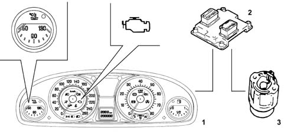
- 1 - Instrument panel
- 2 - Engine Management Node
- 3 - Sensor
If there is a fault, the engine coolant temperature gauge pointer should be on the zero reference (rest position) and should remain in that position as long as the fault persists.
Engine rpm reading [F018]
Status | Description of Performance | Node recovery |
|---|---|---|
Key on: | - The pointer should indicate 0 RPM | The pointer should indicate 0 RPM |
Running: | - The pointer should indicate the engine rpm | - As the < trec > elapses, if no signals are received: The pointer should be positioned at the start of the scale (rest zone - key-off) and there should be a fault message on the matrix display. |
- During < trec > the previous value received should be displayed. #C | ||
If there is no supply at the NQS node the pointer will remain in the position prior to the fault #C | ||
Key off: | - The pointer should indicate 0 RPM | The pointer should indicate 0 RPM |
Speedometer reading [F020]
Status | Description of Performance | Node recovery |
|---|---|---|
Key on: | - The reading at the key-on is 0 Km/h | The indicator shows 0 Km/h. |
Running: | - The indicator shows the vehicle speed as transmitted by the NBC. | - As the < trec > elapses, if no signals are received: The pointer should be positioned at the start of the scale (rest zone - key-off) and there should be a fault message on the matrix display. |
- If there is a fault, the pointer should be positioned at the start of the scale (rest zone - key-off) and there should be a fault message on the matrix display and the symbol.#C | - During < trec > the previous value received should be displayed. #C | |
- If there is no supply at the NQS node the pointer will remain in the position prior to the fault #C | ||
Key off: | The reading at the key-off is 0 Km/h | The indicator shows 0 Km/h. |
The instrument panel receives speed information, expressed in km/h, via the B-CAN line and then shows it through the pointer which is moved by a stepping motor.
The speed information comes from the NBC and the latter calculates the speed using the wheel rpm signal from the NFR (ABS) and measurement of the wheel circumference memorized in the NBC
The pointer remains stationary, in the rest position, at speeds of between 0 and 4 km/h. The speed signal received is shown at higher speeds.
Instant consumption reading [F021]
Status | Description of Performance | Node recovery |
|---|---|---|
Key on: | The gauge shows 0 | The pointer is positioned at the start of the scale (key-off zone) |
Running: | The gauge shows the instant consumption, according to the function logic [F021] | - The pointer should be positioned at the start of the scale (rest zone - key-off) and there should be a fault message on the matrix display. |
- If there is no supply at the NQS node the pointer will remain in the position prior to the fault.#C | ||
Key off: | The pointer is located in the rest zone. | - |
The instant consumption is the value of the fuel in litres consumed by the vehicle in a given period; this data is calculated on the basis of the consumption signal transmitted by the engine management control unit. The instrument panel acquires the consumption signal via the B-CAN
The value displayed is designed to allow the user to appreciate the differences in consumption linked to the style of driving,
When the battery is connected, the value displayed should be equal to "----" for the first 10 seconds, after which the figure calculated is displayed.
For the calculation of the instant consumption, in order to avoid the value displayed varying too much, a "predefined average standard consumption" figure is used (personalized for the vehicle/engine type); afterwards the weight of the initial reading gradually becomes less important and the consumption figures are used.
With the engine started but the speed = 0, the value displayed is equal to "----".
The value is displayed with the following specifications:
- resolution of 0.1 km/l (or mpg)
- calculation precision: £ 0.1 km/l (or mpg)
- max value shown equal to 50 km/litre - 2 l/100km - 99.9 mpg
- min value shown equal to 4 km/litre - 25 l/100km - 2mpg
Milometer reading [F023]
Trip meter
Status | Description of Performance | Node recovery |
|---|---|---|
Key on: | Displays the last value memorized. | Display of the last value memorized |
Running: | Displays mileage covered. | Display of the last value acquired |
Key off: | Milometer display disabled. | - |
Milometer
Status | Description of Performance | Node recovery |
|---|---|---|
Key on: | Displays the last value memorized. | Display of the last value memorized |
Running: | Displays mileage covered. | Display of the last value acquired |
Key off: | Milometer display disabled. | - |
The panel receives information, from the B-CAN line, on the distance travelled processed by the NBC using information coming from the NFR and it increases the total milometer and trip meter counters.
The mileage covered is shown in an LCD which on some versions also shows the recommended gear or the gear engaged.
The display lighting is green and there is an SMD LED.
The LCD has 6 digits (with 7 segments for each digit) for the total reading and 4 digits plus a decimal point for the trip reading. Insignificant zeros are not displayed in order to reduce the numbers shown to the important ones only.
Pressing the "Escape" button (outside the NQS) for longer than 2 seconds zeroes the trip meter, but not the milometer and the messages on the display are not cancelled neither is the Service mileage.
If the same button is pressed for between 50 ms and 2 seconds, this activates the "ESCAPE" function cancelling the messages on the activated matrix.
The instrument memorizes the total mileage so that if the battery is disconnected (+30) not more than +/- 1km is lost whilst the total trip meter memory is lost.
When the instrument is delivered to the assembly factory the milometer can only be zeroed once within the first 200 km.
The possibility of carrying out this zeroing is indicated on the LCD by the letter "H" at the first digit (with 7 segments) on the left of the milometer.
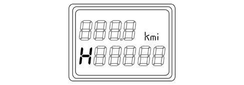
If the operation described previously is carried out before 200 km is reached, then the milometer is zeroed and the letter H disappears.
If this operation is not carried out, when 200 km is reached/exceeded, the letter H disappears and the mileage is displayed with no possiblity of zeroing the milometer any more.
With the ignition switched off, nothing is shown on the display; in this case the "ESCAPE" button has no function, when one of the front doors (left/right) is opened/closed the milometer will light up and display the trip meter and total mileage information for about 10 seconds.
Doors/boot open with vehicle moving buzzer [F101]
Status | Description of Performance | Node recovery |
|---|---|---|
Key on: | When the driver’s front door is opened, if the parking lights are activated, the NQS signals this condition to the user through a buzzer. | No signal |
Running: | When the driver’s front door is opened, if the parking lights are activated, the NQS signals this condition to the user through a buzzer. | No signal |
Key off: | When the driver’s front door is closed, the function is disabled and/or the parking lights are switched off | - |
Indicator recovery logics (stepping motor)
If the indicator stepping motors are losing steps, due, for example, to: transportation/movement, installation of the panel on the vehicle or as a result of serious mechanical and electro-magnetic stresses that have occurred whilst the vehicle was being driven on the road or whilst it was stationary.
There is a "return to zero" logic for all the gauges (partial or complete recovery) at each key-on and key-off operation
This logic also provides for the "return to zero" of all the gauges (complete recovery) each time the battery is connected (+BATT.)
When the gauges are in the "normal operating" positions, this logic guarantees that any movements/fluctuations of the gauges are not visible to the user.
Warning lights
Specifications
The warning lights can be switched on or off by the NQS via a command from the B-CAN, for the systems that are connected to the C-CAN the messages are made available at the B-CAN via the NBC gateway or for the direct management of the component connected to the NQS.
The warning lights usually come on when there is a fault, but some warning lights also come on at the key-on for less than 4 secs. to indicate the check on the system to which they are connected.
"Intelligent" type warning lights are only used for the AIR BAG system failure warning light.
A = Towards the control unit
The warning lights in the instrument panel are grouped together in the following families:
- Dedicated warning lights (ABS, VDC, AIR BAG, BRAKE FLUID, EPB) i.e. specific for a single type of information
- Shared warning lights (EBD, ASR) i.e. shared for several types of information
There is a further division that can be made according to the management of the actual warning light, depending on whether it is controlled via the CAN (Body Computer), directly by the NQS or directly by the control unit (DISCRETE) controlling the device to which the warning light refers.
The warning lights can also be identified according to the characteristics linked to the check function, in other words there are warning lights whose LED is checked at the key-on and others which are not subject to this check.
The table below groups together the warning lights in the Instrument Panel divided into the types described above; the number in the individual columns refers to the symbol illustrated in the diagram below, the code in the "Operation Code" column refers to the descriptions of the activation, deactivation and recovery modes above the diagram, the symbol "X" indicates the belonging of the warning light to a given family.
TABLE SHOWING WARNING LIGHTS IN INSTRUMENT PANEL (NQS) AND MESSAGE DISPLAY
The table below contains the warning lights in the instrument panel:
INFORMATION | COLOUR | TYPE | DEDICATED warning light | SHARED warning light | Check LED | Warning light with CAN structure | NQS warning light | DISCRETE warning light | Operation code | POSITION |
|---|---|---|---|---|---|---|---|---|---|---|
Side lights | Green | Warning light | X | 1 | S14 | Speedometer panel | ||||
Dipped headlamps | Green | Warning light | X | 2 | S08 | Speedometer panel | ||||
Main beam headlamps | Blue | Warning light | X | 3 | S08 | Speedometer panel | ||||
Rear Side Bag disablement | Amber | Warning light | X | 4 | A21 | Speedometer panel | ||||
Rear fog lamps | Amber | Warning light | X | 5 | S08 | Speedometer panel | ||||
Fog lights | Green | Warning light | X | 6 | S08 | Speedometer panel | ||||
Left direction indicator | Green | Warning light | X | 7 | S08 | Instrument panel | ||||
Right direction indicator | Green | Warning light | X | 8 | S08 | Instrument panel | ||||
Brake fluid level/EBD | Red | Warning light + Message | X | 9 | S07 + S18 | Rev counter panel + Active matrix display | ||||
ABS failure | Amber | Warning light + Message | X | X | 10 | S07 + S18 | Rev counter panel + Active matrix display | |||
VDC failure | Amber | Warning light + Message | X | X | 11 | S09 | Rev counter panel + Active matrix display | |||
EPB failure | Amber | Warning light + Message | X | X | 12 | N08 | Rev counter panel + Active matrix display | |||
Air Bag failure | Red | Warning light + Message | X | 13 | A20 | Speedometer panel + Active matrix display | ||||
Passenger Air Bag disablement | Amber | Warning light | X | 14 | A21 | Speedometer panel | ||||
Engine management system failure - EOBD | Amber (1) Red (2) | Warning light + Message | X | 15 | N05 | Speedometer panel + Active matrix display | ||||
Seat belts not fastened | Red | Warning light | X | 16 | N08 | Speedometer panel | ||||
Engine coolant overheating | Red | Warning light + Message + symbol | X | 17 | S02 | Coolant temperature panel + Active matrix display | ||||
Insufficient fuel level | Amber | Warning light + Message | X | 18 | S06 | Fuel gauge panel + Active matrix display |
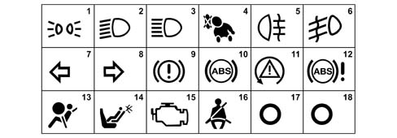
Description of warning light operating codes
The functional specifications (on / off / recovery) of the warning lights in the NQS during the key-on, driving and key-off stages are given below in a table format.
Warning lights with CAN structure
The table below contains the warning lights with a CAN structure:
CODE | Stage | ACTIVATED | DEACTIVATED | RECOVERY |
|---|---|---|---|---|
S02 | Key-on | Synchronous with the key-on controlled by the NQS | After the < t > CKS > time has elapsed and the signal has been received | Activated if there is no signal received within the < t > CKS > time |
Running | When the signal is received | When the signal is received | Maintenance of the previous state if there is no signal received within the < t > REC > time | |
Key-off | - | Synchronous with the key-off | - | |
S06 | Key-on | Synchronous with the key-on controlled by the NQS | After the < t > CKS > time has elapsed and the signal has been received | Flashing (1 Hz - DC 50%) if there is no signal received within the < t > CKS > time |
Running | When the signal is received: | When the signal is received | Flashing (1 Hz - DC 50%) if there is no signal received within the < t > REC > time | |
- constantly for normal operation | ||||
- flashing (1 Hz - DC 50%) for failure | ||||
Key-off | - | Synchronous with the key-off | - | |
S07 | Key-on | Synchronous with the key-on controlled by the NQS | After the < t > CKS > time has elapsed and the signal has been received | Activated if there is no signal received within the < t > CKS > time |
Running | When the signal is received | When the signal is received | Activated if there is no signal received within the < t > NFR > time | |
Key-off | - | Synchronous with the key-off | - | |
S08 | Key-on | When the signal is received (no check) | When the signal is received | Deactivated if there is no signal received within the < t > REC > time |
Running | When the signal is received | When the signal is received | Deactivated if there is no signal received within the < t > REC > time | |
Key-off | - | Synchronous with the key-off | - | |
S09 | Key-on | Synchronous with the key-on controlled by the NQS | After the < t > CKS > time has elapsed and the signal has been received | Activated if there is no signal received within the < t > CKS > time |
Running | When the signal is received: | When the signal is received | Activated if there is no signal received within the < t > NFR > time | |
- constantly for malfunction | ||||
- flashing (4 Hz - DC 50%) for operation | ||||
Key-off | - | Synchronous with the key-off | - | |
S14 | Key-on | When the signal is received (no check) | When the signal is received | Deactivated if there is no signal received within the < t > REC > time |
Running | When the signal is received | When the signal is received | Deactivated if there is no signal received within the < t > REC > time | |
Key-off | When the signal is received | When the signal is received | Deactivated if there is no signal received within the < t > REC > time | |
S18 | Key-on | When the signal is received (no check) | When the signal is received | Activated if there is no signal received within the tNFR time |
Running | When the signal is received | When the signal is received | Activated if there is no signal received within the < tNFR > time | |
Key-off | - | Synchronous with the key-off | - |
Warning lights with logic managed by NQS
The table below contains the warning lights with the operating logic managed by the NQS:
CODE | Stage | ACTIVATED | DEACTIVATED | RECOVERY |
|---|---|---|---|---|
N05 | Key-on | Synchronous with the key-on controlled by the signal within the < t > CKS > time | Controlled by the signal | Activated if there is a short circuit/open circuit |
Running | Controlled by the signal | Controlled by the signal | Maintenance of the previous state if there is a short circuit/open circuit | |
Key-off | - | Synchronous with the key-off | - | |
N08 | Key-on | When the signal is received (no check) | When the signal is received | Activated if there is a short circuit/open circuit |
Running | When the signal is received | When the signal is received | Activated if there is a short circuit/open circuit | |
Key-off | - | Synchronous with the key-off | - |
Warning lights with discrete logic
The table below contains the warning lights with a discrete type operating logic:
CODE | Stage | ACTIVATED | DEACTIVATED | RECOVERY |
|---|---|---|---|---|
A20 | Key-on | Synchronous with the key-on controlled by the signal within the < t > DIS > time from the key-on | Controlled by the signal | Activated if there is a short circuit/open circuit (warning light activated) |
Running | Controlled by the signal | Controlled by the signal | Activated if there is a short circuit/open circuit (warning light activated) | |
Key-off | - | Synchronous with the key-off | - | |
A21 | Key-on | Controlled by the signal (no check) | Controlled by the signal | Activated if there is a short circuit/open circuit (warning light activated) |
Running | Controlled by the signal | Controlled by the signal | Activated if there is a short circuit/open circuit (warning light activated) | |
Key-off | - | Synchronous with the key-off | - |
TYPE OF INFORMATION SHOWN ON THE RECONFIGURABLE MATRIX DISPLAY IN THE INSTRUMENT PANEL (NQS) OR THE CENTRE CONSOLE (CONNECT)
The table below shows the type, method and allocation of information available through the vehicle’s info-telematic system in a diagrammatic form.
DESCRIPTION OF FUNCTIONS | ALWAYS PRESENT | AT THE KEY-ON | AT THE EVENT | ON REQUEST | AT THE NQS | AT THE CONNECT |
|---|---|---|---|---|---|---|
Clock | X | X | X | |||
Date | X | - | X | |||
Outside temperature | X | X | X | |||
Signalling of danger of ice | X | X | - | |||
Reconfigurable warning lights | X | X | - | |||
Check | X | X | X | - | ||
Engine oil level | X | X | - | |||
Automatic transmission information | X | X | - | |||
Trip Computer | X | - | X | |||
Service (Planned maintenance): | X | X | X | X | ||
Radio information repetition (station frequency) | X | X | - | |||
Telephone information repetition | X | X | - | |||
SMS (reception and not display) | X | X | X | |||
Traffic information | X | - | X | |||
Telephone assistance | X | - | X | |||
Navigation with pictograms | X | X | X | |||
Destination information | X | X | X | |||
Journey information | X | - | X | |||
Position information | X | - | X | |||
Adaptive Cruise Control information | X | X | - | |||
Voice box | X | X | - | |||
SET-UP MENU functions | X | - | X | |||
AGENDA/MEMORANDUM functions | X | - | X |
The symbols shown in the active matrix display appear in a window about 32 x 32 pixel in the lower part of the matrix in the centre; this section can be lit up in 3 different colours (red, amber or green).
The same area is used to display other symbols relating to vehicle operating conditions or outside parameters after one of the messages in the table below has ended the display cycle.
These symbols usually remain as long as the event or condition that produced them persists.
ACTIVE MATRIX DISPLAY INFORMATION TABLE
The table below lists the symbols for the groups of information that the display can show; for details of the display cycles and messages refer to the detailed description.
There is a reference number for the diagram after the table for each piece of information in the "Symbol" column.
The priority of the actual information and the display mode according to this priority is described in the specific paragraph for each piece of information in the specific column.
For some groups of information, addition to the symbol, there is a message and an icon proposed, the list of the twelve types of messages that can be displayed is illustrated in the table which follows.
The first column of the table contains the function code for the event; for the description of the actual function, see the specific paragraph.
Fun. | Description of the information | Priority | Symbol | Display | Buzzer |
|---|---|---|---|---|---|
F019 | Insufficient engine oil pressure | 0 | 1 | Message Type 3 + Icon | YES |
F006 | Alternator failure | 1 | 2 | Message Type 2 | YES |
F024 | Heater plugs pre-heating stage | 1 | 3 | Message Type 1 | - |
F09 F10 F101 | Doors not properly shut (left, right, front, rear) | - | 4 | 3D Graph | - |
F060 | Brake lights failure (left, right) | 2 | 5 | Message Type 1 + 3D Graph + Icon | YES |
F028 | Side lights failure (left, right, front, rear) | 2 | 6 | Message Type 1 + 3D Graph + Icon | YES |
F031 | No. plate lights failure | 2 | 7 | Message Type 1 + 3D Graph + Icon | YES |
F001 | Code failure | 1 | 8 | Message Type 1 | YES |
F001 | Vehicle protection system failure | 1 | 9 | Message Type 1 | YES |
F017 | Insufficient engine oil level | 0 | 10 | Message Type 3 + Icon | YES |
F010 | Insufficient engine coolant level | 0 | 11 | Icon | YES |
F011 | Insufficient windscreen washer fluid level | 2 | 12 | Message Type 6 + Icon | YES |
F196 | Automatic transmission failure | 1 | 13 | Message Type 2 | YES |
F196 | Automatic transmission fluid overheating | 0 | 14 | Message Type 3 | YES |
F136 | Brake pad wear | 2 | 15 | Message Type 1 | YES |
F072 | Electric power assisted steering failure | 1 | 16 | Message Type 2 | YES |
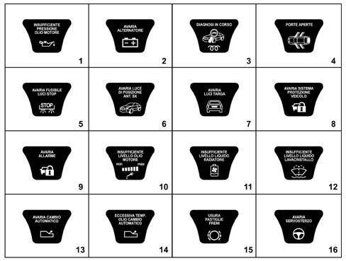
Fun. | Description of the information | Priority | Symbol | Display | Buzzer |
|---|---|---|---|---|---|
F025 | Cruise control on | - | 17 | - | - |
F026 | Adaptive Cruise control on | - | 18 | - | - |
F026 | Adaptive Cruise control failure | 1 | 19 | Message Type 1 | YES |
F251 | Window safety system failure | 2 | 20 | Message Type 1 | YES |
F135 | Insufficient tyre inflation pressure (left, right, front, rear) | 2 | 21 | Message Type 7 | YES |
F135 | Tyre inflation pressure monitoring failure | 2 | 22 | Message Type 1 | YES |
F014 | Headlamp alignment correction system failure | 2 | 23 | Message Type 1 | YES |
F262 | Humidity in the diesel filter | 2 | 24 | Message Type 1 + Icon | YES |
F005 | Inertia switch on | 0 | 25 | - | YES |
F141 | Excessive speed | 2 | 26 | Message Type 1 | YES |
F194 | Suspension failure | 2 | 27 | Message Type 2 | YES |
F114 | Rain sensor failure | 2 | 28 | Message Type 1 + Icon | YES |
F179 | Parking sensor failure | 2 | 29 | Message Type 1 | YES |
F044 | Dusk sensor failure | 2 | 30 | Message Type 1 + Icon | YES |
F263 | Child-proof locks switched off | - | 31 | - | - |
F026 | ACC radar failure - lens dirty | 1 | 32 | Message Type 1 | YES |
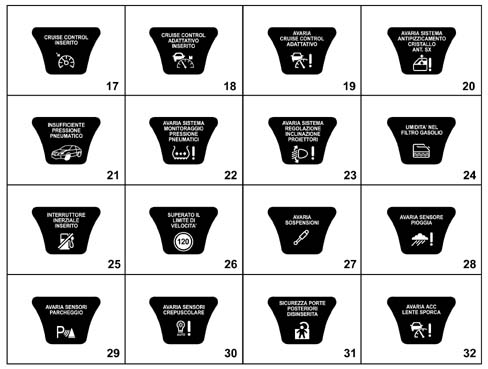
The table below lists the various types of messages that are displayed together with the symbols in the instrument panel reconfigurable matrix if one of the vehicle systems fails
Type | Message show on the matrix display |
|---|---|
1 | Go to the workshop |
2 | Go to the workshop slowly |
3 | Switch off the engine, do not continue |
4 | Slow down |
5 | Reduce the engine speed |
6 | Check the level |
7 | Check the pressure |
8 | Range = 200 km; Max speed = 80 km/h |
9 | End of range, do not continue |
10 | Vehicle cannot be started up again |
11 | Service in ... km |
ACTIVE MATRIX FAULT DISPLAY TABLE
The table below contains:
- the faults which, even though there is a dedicated warning light or specific symbol for them, are repeated in the display through a message
- the display, through symbols or messages of the state of those functions which, either controlled by the user or managed automatically by the vehicle information system, should be communicated to the user.
The first column "N" contains the reference to the image reproduced in the diagrams below, which, where appropriate, contain the sequence of the screens displayed for each event
The second column in the table contains the function code for the event; for the description of the actual function, see the specific paragraph.
N° | Fun. | Description of the information | Priority | Dedicated warning light | Display | Buzzer |
|---|---|---|---|---|---|---|
1 | F132 | ABS failure | 1 | YES | Message Type 1 | YES |
2 | F134 | VDC failure | 1 | YES | Message Type 1 | YES |
3 | F001 | Failure and system not programmed | 1 | NO | Symbol | YES |
4 | F020 F018 F002 F021 | Failure (2) | 2 | M1 | Message Type 1 | YES |
5 | - | Information system failures (CAN) | 2 | - | - | YES |
6 | - | Information system failures (CAN) | 2 | - | - | YES |
7 | - | Information system failures (CAN) | 2 | - | - | YES |
8 | - | Information system failures (CAN) | 2 | - | - | YES |
9 | F132 | EBD system failure | 0 | YES | Message Type 3 | YES |
10 | F252 | Electric parking brake failure | 1 | YES | Message Type 1 | YES |
11 | F139 | Air Bag system failure | 0 | YES | Message Type 3 | YES |
12 | F022 | Engine management system failure | 1 | YES | Message Type 1 | YES |
13 | F024 | Heater plugs failure | 1 | NO | Message Type 1 | YES |
14 | F322 | Alarm failure | 2 | NO | Message Type 1 | YES |
15 | F262 | Diesel filter sensor failure | 2 | NO | Message Type 1 | YES |
16 | F016 | Radiator coolant temperature sensor failure | 2 | M1 | Message Type 1 | YES |
17 | F019 | Engine oil pressure sensor failure | 2 | M1 | Message Type 1 | YES |
18 | F017 | Engine oil level sensor failure | 2 | M1 | Message Type 1 | YES |
19 | F145 | Brake fluid warning light failure | 2 | M1 | Message Type 1 | YES |
20 | F132 F252 | ABS or VDC or EPB warning light failure | 2 | M1 | Message Type 1 | YES |
21 | F060 | Brake lights fuse failure | 2 | NO | Message Type 1 + Icon | YES |
22 | F053 | Direction indicators failure (left, right, front, rear) | 2 | NO | Message Type 1 | YES |
23 | F034 | Rear fog lamp(s) failure (left, right)/(left and right) | 2 | NO | Message Type 1 | YES |
24 | F026 | ACC failure - lens dirty | 1 | NO | Message Type 1 | YES |
25 | F026 | Brake safely | - | NO | - | YES |
26 | F026 | Adaptive Cruise control OFF | - | NO | - | - |
27 | F026 | Adaptive cruise control not activated | - | NO | - | YES |
28 | F145 | Insufficient brake fluid level | 0 | YES | Message Type 3 | YES |
29 | F002 | Refilling with fuel required | 2 | YES | YES | |
30 | F133 | ASR on | - | NO | Symbol | - |
31 | F133 | ASR off | - | NO | Symbol | - |
32 | F139 | Warning - Air Bag test not over (**) | 0 | NO | Symbol | YES |
33 | F326 | The steering locks when the doors are closed | - | NO | - | - |
34 | F001 | System not programmed | 2 | NO | Symbol | YES |
35 | F322 | Break in attempt | - | NO | Symbol | - |
36 | F322 | Electronic key battery run down | - | NO | Symbol | - |
37 | F322 | Remote control battery run down | - | NO | Symbol | - |
38 | F322 | Electronic key not recognized | 1 | NO | Symbol | YES |
39 | F192 | Danger of ice warning | - | NO | - | YES |
40 | F326 | Key no longer present in the vehicle | 1 | NO | Message Type 10 | YES |
41 | F016 | Radiator coolant overheating | 0 | YES | Message Type 3 | YES |
42 | F048 | Follow me (1) | - | - | - | |
43 | F135 | Tyre punctured | 2 | NO | Message Type 8 | YES |
44 | F135 | Tyre punctured, excessive speed and end of range | 0 | NO | Message Type 9 Message Type 4 | YES |
45 | F135 | Tyre condition system not programmed | 2 | NO | Symbol | YES |
42 | - | Information system failures (CAN) | 2 | - | - | YES |
(1) Function only activated at the key-off, on account of which there is no point in defining a priority.
(2) Message and symbol used in the following cases:
- a) Speed indicated faulty ("speed indicator failure")
- b) Engine rpm indicated faulty ("rev counter failure")
- c) Fuel level reading faulty ("fuel gauge failure")
- c) Fuel consumption reading faulty ("fuel consumption failure")
- e) General failure
For all the cases listed above, from a) to e), the priority of the message is always type 2.
The screens referring to the previous table are illustrated below.
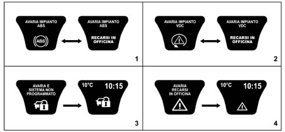
- 1 - ABS failure
- 2 - VDC system failure
- 3 - Failure and system not programmed
- 4 - Failure
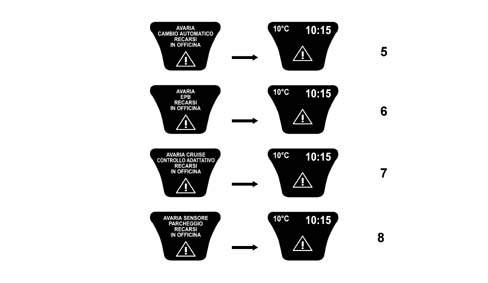
- Information system failures (CAN)
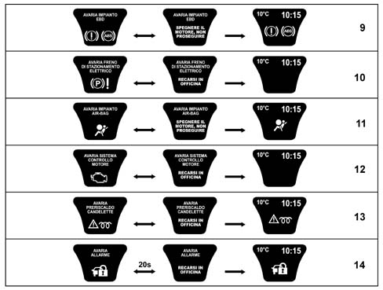
- 9 - EBD system failure
- 10 - Electric parking brake failure
- 11 - Air Bag system failure
- 12 - Engine management system failure
- 13 - Heater plugs failure
- 14 - Alarm failure
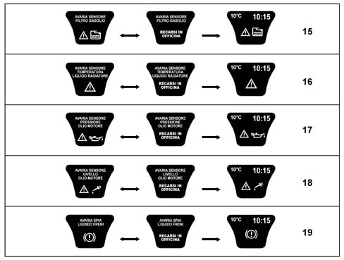
- 15 - Diesel filter sensor failure
- 16 - Radiator coolant temperature sensor failure
- 17 - Engine oil pressure sensor failure
- 18 - Engine oil level sensor failure
- 19 - Brake fluid warning light failure
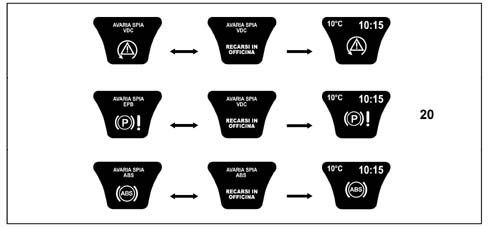
- 20 - ABS or VDC or EPB warning light failure
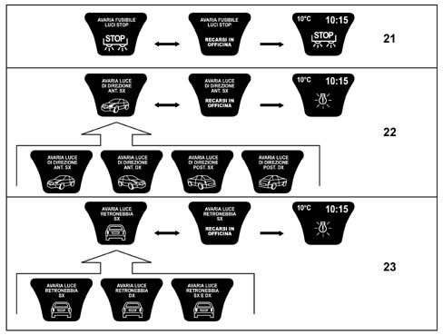
- 21 - Brake lights fuse failure
- 22 - Direction indicators failure (left, right, front, rear)
- 23 - Rear fog lamp(s) failure (left, right)/(left and right)
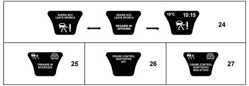
- 24 - ACC failure - lens dirty
- 25 - Brake safely
- 26 - Adaptive Cruise control OFF
- 27 - Adaptive cruise control not activated
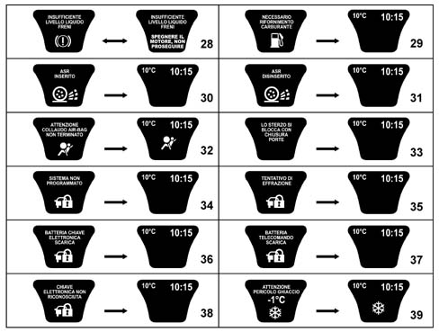
- 28 - Insufficient brake fluid level
- 29 - Refilling with fuel required
- 30 - ASR on
- 31 - ASR off
- 32 - Warning - Air Bag test not over (**)
- 33 - The steering locks when the doors are closed
- 34 - System not programmed
- 35 - Break in attempt
- 36 - Electronic key battery run down
- 37 - Remote control battery run down
- 38 - Electronic key not recognized
- 39 - Danger of ice warning
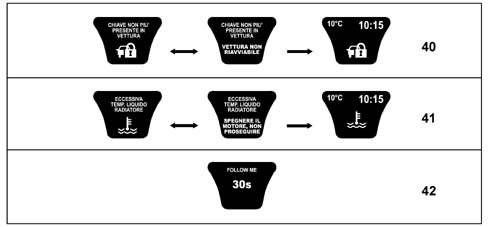
- 40 - Key no longer present in the vehicle
- 41 - Radiator coolant overheating
- 42 - Follow me
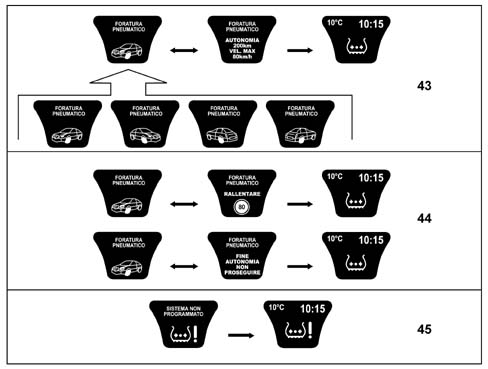
- 43 - Tyre punctured
- 44 - Tyre punctured - end of range
- 45 - Tyre condition system not programmed
DISPLAY OF AUDIO, TELEPHONE, NAVIGATOR, ACC, SERVICE AND MISCELLANEOUS FUNCTION IN ACTIVE MATRIX DISPLAY
In addition to showing fault messages and/or activating functions, the active matrix display can, after setting the CONNECT, show the screens for the info-telematic node for the AUDIO/TELEPHONE/NAVIGATION functions when they are activated in addition to providing information relating to the ACC system (Adaptive Cruise Control) if the vehicle is fitted with this function and the system is working.
Similarly to what was illustrated previously for the fault and/or operating messages, the tables which follow contain the specific messages for the functions mentioned previously.
There is not a specific function for all the displays listed in the table below, in these cases the main function is represented.
There is a reference number for the diagram after the table for each piece of information in the "Symbol" column.
In the table below the main and secondary screens for each function are represented (i.e. those that can be displayed or, if faults are present simultaneously or in standard conditions, after a certain period of time)
Telephone functions
Symbol | Fun. | Description of the information |
|---|---|---|
1 | F209 | Telephone directory |
2 | F209 | Last calls |
3 | F209 | Call in progress |
4 | F209 | Incoming call from number listed in the directory |
5 | F209 | Incoming call from number not listed in the directory |
6 | F209 | New incoming call from number not listed in the directory |
7 | F209 | New incoming call from number listed in the directory |
8 | F209 | Incoming message |
9 | F209 | New incoming message |
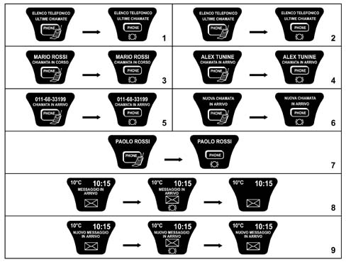
Audio functions
Symbol | Fun. | Description of the information |
|---|---|---|
1 | F155 | Frequency of radio station selected |
2 | F155 | RDS messages from radio station selected |
3 | F155 | Audio channel search stage |
4 | F155 | Side of cassette listened to |
5 | F155 | Cassette fast rewind |
6 | F155 | Cassette fast forward |
7 | F155 | Cassette pause |
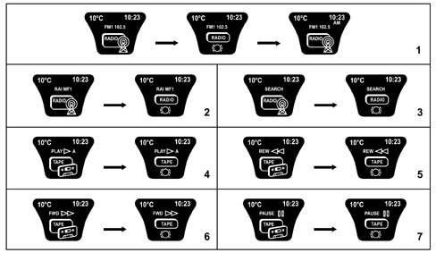
Symbol | Fun. | Description of the information |
|---|---|---|
8 | F155 | Audio CD track selected |
9 | F155 | No CD in player |
10 | F155 | CD pause |
11 | F155 | CD number and track (CHANGER) |
12 | F155 | CD title in use |
13 | F155 | No CD in CHANGER |
14 | F155 | CD pause (CHANGER) |
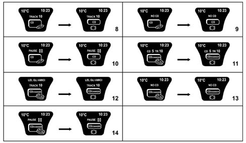
Navigation functions
Symbol | Fun. | Description of the information |
|---|---|---|
1 | F176 | Name of road about to be entered, pictogram and distance, in metres, from next manoeuvre |
2 | F176 | Nine direction indications |
3 | F176 | Eight direction indications (left hand drive) |
4 | F176 | Eight direction indications (right hand drive) |
5 | F176 | Direction indications off the map |
6 | F176 | Sixteen direction indications off the map |
7 | F176 | Distance from the next manoeuvre more than 20 km |
8 | F176 | Distance from the next manoeuvre between 2 and 20 km |
9 | F176 | Distance from the next manoeuvre between 1 and 2 km |
10 | F176 | Distance from the next manoeuvre between 300m and 1 km |
11 | F176 | Distance from the next manoeuvre less than 300m |
The diagram below shows the functions listed previously with three possible conditions:
- standard screen (column A)
- failure screen (column B)
- screen with ACC device activated (column C)
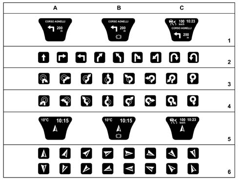
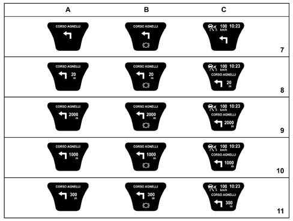
ACC (Adaptative Cruise Control) functions
Symbol | Fun. | Description of the information |
|---|---|---|
1 | F026 | ACC system activated but not programmed |
2 | F026 | ACC system activated with speed programmed |
3 | F026 | Obstacle detected |
4 | F026 | Obstacle hooked onto |
5 | F026 | ACC system failure with Navigation functions activated |
6 | F026 | Obstacle hooked onto in SPORT operating condition |
7 | F026 | Obstacle hooked onto in NORMAL operating condition |
8 | F026 | Obstacle hooked onto in COMFORT operating condition |
9 | F026 | Obstacle hooked onto with request to change gear |
The diagram below shows the functions listed previously with three possible conditions:
- standard screen (column A)
- failure screen (column B)
- screen with 12 hour clock (AM/PM) (column C)
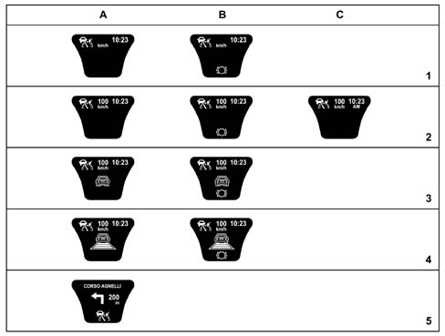
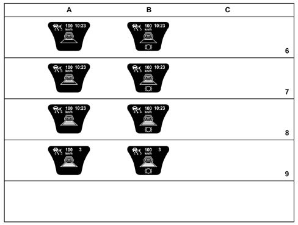
Service and miscellaneous functions
Symbol | Fun. | Description of the information |
|---|---|---|
1 | F041 | Interior lighting brightness |
2 | F270 | Voice Recorder (message recording) |
3 | F269 | Service between 50 and 2000 km |
4 | F269 | Service in 0 km |
5 | F269 | Service in 3 to 30 days |
6 | F269 | Service in 1 days |
7 | F269 | Service in 0 days |
8 | F269 | Service information system not programmed |
9 | F017 | Maximum oil level reading |
The diagram below shows the functions listed previously with three possible conditions:
- standard screen (column A)
- failure screen (column B)
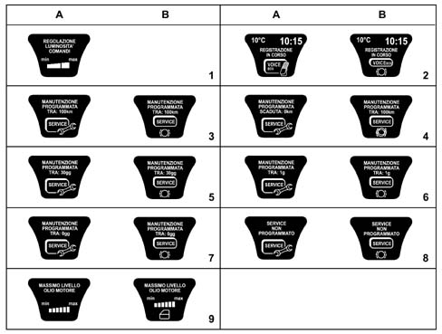
FAULT DIAGNOSIS
The diagnosis of the instrument panel can be carried out using the diagnostic equipment available in the network (Examiner or Examiner plus).
The diagnostic socket is located in the EOBD, the line used is the B-CAN line.
The following operations are included in the diagnosis:
- Display of possible errors present in the instrument panel,
- Align the PROXI with the B-CAN (memorizing of specific vehicle parameters), if the instrument panel is being replaced
- Memorizing milometer mileage.
- Set the kilometres and the days for the SERVICE function
- Carry out the active diagnosis in order to check the operation of the instrument panel